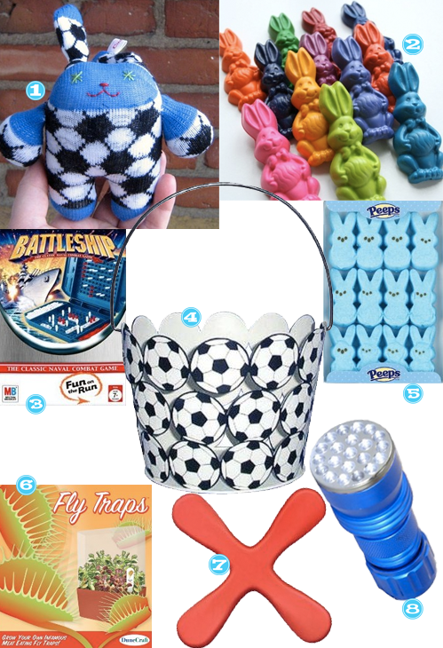

So, Easter is always a neat time of the year. Church, hidden plastic eggs filled with money, and family. That all makes sense right?
Seriously though, I love scoping out goodies for my son, Austin’s, basket. Check it out (rated: 7-year-old boy).

- Pocket Bunny– handmade and adorable. Love it.
- Bunny Crayons – I love seeing something as simple as crayons in a shape like a bunny to celebrate the day.
- Soccer Easter Basket – for my little future Pelé.
- Travel Battelship – these types of things are great for going on trips, around the house with out the clutter and just to have when he spends the night at a friends. Austin has really gotten into Risk lately. Anyone seen an updated or travel version of Risk?
- Peeps – ‘nough said.
- Venus Fly Trap Kit – has anyone been watching the new series on the Discovery Channel, Life? Well, its great, Aus and I really love watching it together and it makes it totally rational to give my son a Venus Fly Trap for Easter.
- Indoor Boomerang – I always kick myself in the ass for toys like this. But, an indoor boomerang? Pretty sure we need to test it just to make sure it WON’T break things.
- Giant LED Flashlight – Aus has a million flashlights, but the LED and the size makes this one even cooler.


{kind=link}
Recent Comments